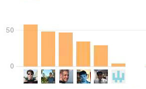

INF 362 Unit 3
Web Design
iRAT
Hand in your test papers.
Mini Lecture
Clarification
Sublime Text 2
Editor of Choice
Getting to Know GitHub
Let's install GitHub, and log in
What is the best summarization of?
- Pull Request
- Fork
- Commit
- Push/Sync
- Clone
What would you use a github issue for?
What would you use a branch for?
Clone
Clone your team's repo to your computer
Commit
Make a change to your code and commit it.
Branching
Click the "master" branch icon and create a new branch.
Call it "gh-pages"
How can YOU utilize GH-Pages?
Fork to your own, create gh-pages branch
Let's Fork!
Fork your own version of the repo
Make your own commit
sync it
Create your own gh-pages branch
View it: username.github.io/repo-name
Pull it back in.
Goto Github.com
Find your repo
Initiate Pull Request
Note about branching
You can branch instead of fork if you are testing locally.
Can be helpful, but not when we get into Jekyll.
Note about Pull Requests
Merge Conflicts
<<<<<<< Head:my-commit
Line 3: Hello World!
=======
Line 3: Hello Mom!
>>>>>>> 4h42k2b2dh36df8:my-commit
Breakdown
<<<<<<< Head:my-commit
Line 3: Hello World!
=======
Line 3: Hello Mom!
>>>>>>> 4h42k2b2dh36df8:my-commit
Issues
Github.com > click issues
Use issues as a forum for discussion.
Look over your sketch sheets
Develop as many tasks that you can think of to implement those sketches into code.
(at least 10)
Now assign them
Look over each task and assign each one to a specific person
Categorize them
Layout?
Design?
Interaction?
etc
Milestones
You just created your milestones for your mid-term
Create Issues
...and assign them.
Create a new milestone
In issues list, create your milestones
Tips
- Don't make a change unless there's an issue created for it
- Assign to yourself or someone else.
- Only work on issues you are assigned to.
- Close issues from commits
closes #15
- Reference Users in comments
@esteinborn does this look right?
- Use labels to identify bugs etc.

Someone is lagging behind, what are the possible ways to address this.
Rank the following in order of Mobie First-ness
- Meta Viewport tag
- Content Design
- Fancy Navigation
- Touch Support
Place the following in order for Mobile First design
- UI Design
- Focused Content Design
- UX Design
- Color Choice
- Exciting new phone features
Next Time on...
- Content
- Basic SASS (Prepros)
- RWD
- Grid
- Media Queries
- Typical Design Patterns
- Navigation
- Images
MVP for Site Should be:
- Forecloseure process in general
- Every Stage in detail 1-8
- stage 6: preparation for settlement conference (5 steps)
Forecloseure Documents
Midterm Project Criteria
Use Github issues to discuss project grading criteria
- full functionality
- color choice
- accessibility
- intuitive
- UX flows well
- not too much input for the user
Top 5
As a team decide on 5 grading criteria that you feel will equal a finished midterm.
We'll discuss next week and finalize
State of your project by next week:
- Based off Html5 BP (NOT A FORK) (remove "browse happy" prompt)
- All layout should be percentage-based
- Using Em's for precise measurement, PX only for body font declaration.
- Header, Footer, Basic navigation
- Fully flesh out issues from sketches
- Milestones created for Midterm and final drafts and FULL due dates.
Basic SASS
Prepros
RWD
Grid
Media Queries
Typical Design Patterns
Brad Frost etc
Navigation
Images
JavaScript (progressive enhancement/browser compatibility
CSS3
Browser Compatbility
Progressive Enhancement
Mobile Device Remote Inspection